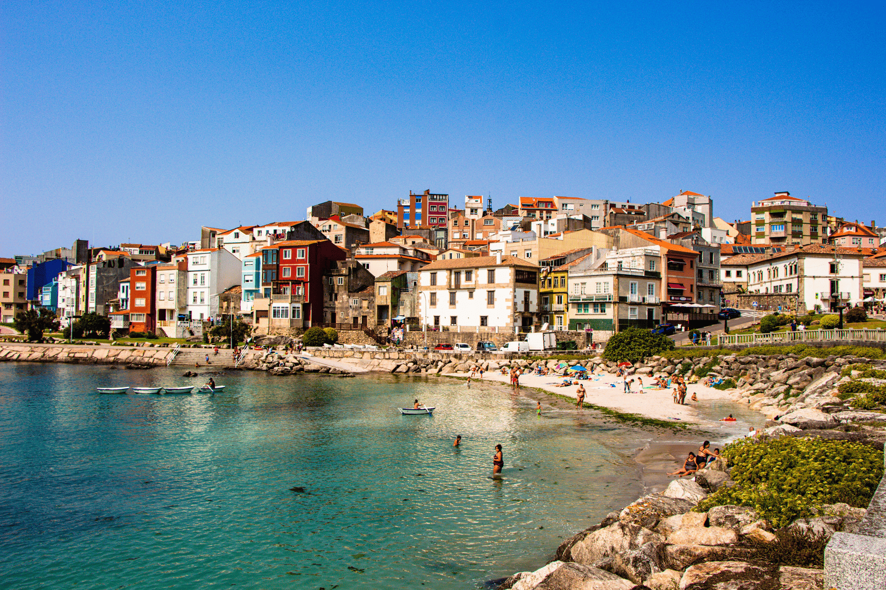
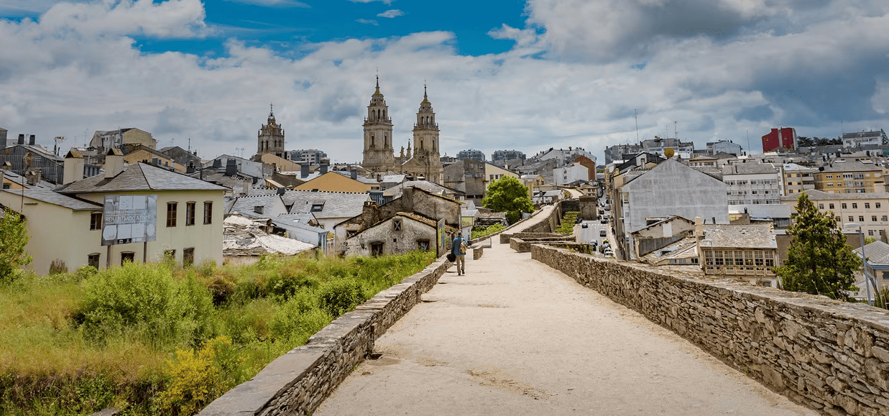
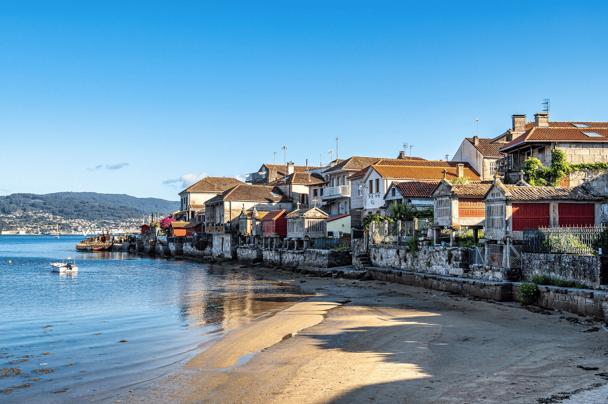
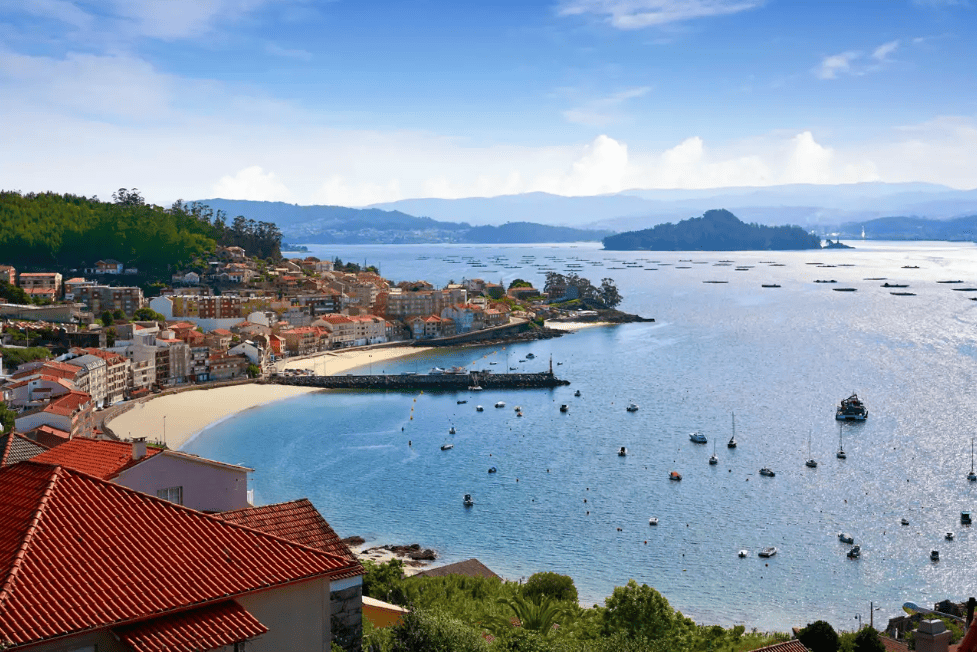

Su capital, Santiago de Compostela, es el destino final de los peregrinos del famoso Camino de Santiago. Solo por esto ya merece la pena visitar esta Comunidad de la España Verde.
Te encantarán sus paisajes de frondosos valles e impresionantes playas. En su litoral, bañado por el mar Cantábrico y el océano Atlántico, encontrarás zonas de espectaculares acantilados como los de A Costa da Morte o el increíble Parque Nacional de las Islas Atlánticas de Galicia.

Lugo (Provincia)
Se sitúa al norte de España, en el norte de la región de Galicia. Su capital es la ciudad de Lugo, cuya Muralla Romana está declarada Patrimonio de la Humanidad por la UNESCO.
La provincia se caracteriza por el gran contraste de sus paisajes, ya que posee tanto zona montañosa como litoral con playas impresionantes como la de Las Catedrales.

Pontevedra (Provincia)
Se sitúa en la región de Galicia, al noroeste de España. En ella, es posible encontrar en pocos kilómetros tanto sierra como costa, la perteneciente a las Rías Baixas. Repleta de lugares de gran belleza y miradores en torno a las rías, destaca el Parque Nacional de las Islas Atlánticas y sus magníficas playas.
Es recomendable recorrer su Ruta del Románico, conocer las construcciones típicas llamadas pazos y la visita a localidades de Pontevedra como Marín, con sus monumentos megalíticos; Vilaboa y Poio, con sus petroglifos; La Guardia, Sanxenxo, Cambados o Illa de Arousa, todas con estupendas playas. Imprescindible son también la capital, Pontevedra, y su casco histórico.


A Coruña (Provincia)
Se sitúa en la región de Galicia, al noroeste de España. Su Costa da Morte, con importantes ecosistemas marítimos, posee escarpados acantilados, dunas y villas marineras con tradicionales faros y playas.
El interior se caracteriza por sus montes y verdes valles. Destacan espacios como la Reserva de la Biosfera As Mariñas Coruñesas e Terras do Mandeo, el Parque Natural de las Fraguas de Eume y el del Complejo Dunar de Corrubedo y Lagunas de Carregal y Vixán.